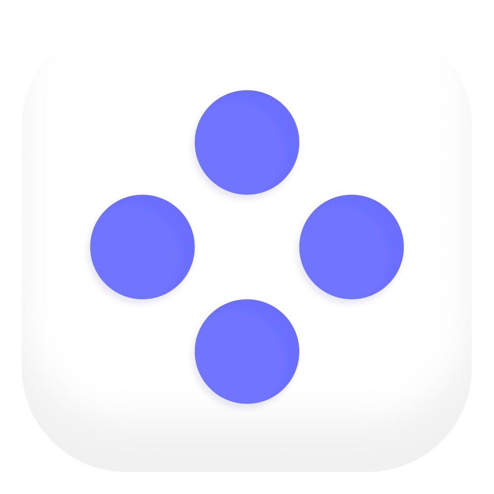

Plan the daily things you want to stick with.
Capture proof when you do.
Only your inner circle sees it.
No plan is too big or small. As long as it's yours.
They're for your circle, not strangers.
No filters, no edits — just real, authentic moments. Capture your daily wins, big and small.
Risers isn't for followers and likes. It's for the people you actually feel comfortable being honest with — the wins, the setbacks, and everything in between.
Your inner circle is invite-only and consent-based. No strangers. No performance. Just the people you trust enough to be vulnerable with.
They see your commitments. They see your proof. There for every win and every setback.
Risers lives right at the sweet spot of these amazing apps.
Daily proof of movement, nutrition, and healthy living, shared with your partner or a trusted few.
Risers is almost here. Be first in your circle — get early access when we launch on iOS and Android.